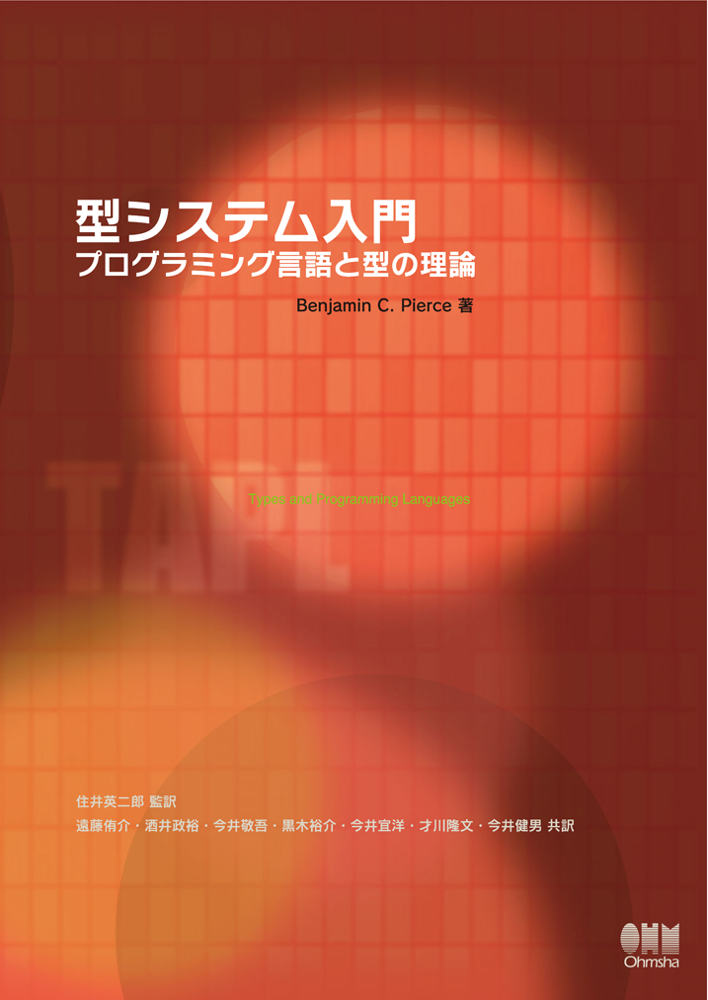
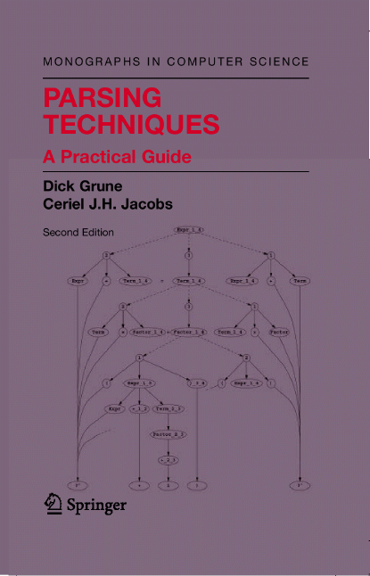

<!doctype html>
<html lang="ja">

	<head>
		<meta charset="utf-8">

		<title>私のプログラミング言語の学び方</title>

		<meta name="description" content="私のプログラミング言語の学び方">
		<meta name="author" content="Kota Mizushima">

		<meta name="apple-mobile-web-app-capable" content="yes">
		<meta name="apple-mobile-web-app-status-bar-style" content="black-translucent">

		<meta name="viewport" content="width=device-width, initial-scale=1.0, maximum-scale=1.0, user-scalable=no, minimal-ui">

		<link rel="stylesheet" href="css/reveal.css">
		<link rel="stylesheet" href="css/theme/black.css" id="theme">
<style type="text/css">
  .reveal h1,
  .reveal h2,
  .reveal h3,
  .reveal h4,
  .reveal h5,
  .reveal h6 {
    text-transform: none;
  }
</style>

		<!-- Code syntax highlighting -->
		<link rel="stylesheet" href="lib/css/zenburn.css">

		<!-- Printing and PDF exports -->
		<script>
			var link = document.createElement( 'link' );
			link.rel = 'stylesheet';
			link.type = 'text/css';
			link.href = window.location.search.match( /print-pdf/gi ) ? 'css/print/pdf.css' : 'css/print/paper.css';
			document.getElementsByTagName( 'head' )[0].appendChild( link );
		</script>

		<!--[if lt IE 9]>
		<script src="lib/js/html5shiv.js"></script>
		<![endif]-->
	</head>

	<body>

		<div class="reveal">

			<!-- Any section element inside of this container is displayed as a slide -->
			<div class="slides">
				<section data-markdown data-separator="^\n---$"><script type="text/template">

## 私のプログラミング言語の学び方
## 水島 宏太（株式会社ドワンゴ）
## Japan Scala Association代表理事

---

## 自己紹介
* Twitter: [@kmizu](https://twitter.com/kmizu)
* GitHub: [kmizu](https://github.com/kmizu)
* 構文解析おじさん & プログラミング言語オタク 
* Scalaエヴァンジェリスト
* 趣味：プログラミング言語|形式言語の自作
  * [Onion](https://github.com/onionlang/onion)
  * [Klassic](https://github.com/klassic/klassic)
  * [Macro PEG](https://github.com/kmizu/macro_peg)
  * , etc.

---

## 宣伝(1) - ScalaMatsuri 2017
* 2017年2月25,26日開催
  * ScalaMatsuri 2016と同じ会場(の予定)
  * お台場
* キックオフミーティング
  * 2016年07月02（土）13:00 - 15:00
  * [ここ](https://japan-scala-association.doorkeeper.jp/events/46473)から申し込み可能
  * 興味のある皆さんは是非参加を！

---

## 宣伝(2) - プログラミング言語Klassic
* 私が開発中の新しいプログラミング言語
* https://github.com/klassic/klassic
* スターください
* Written in Scala
* 凄くスペースセンシティブな文法
* ヒアドキュメント・ヒア式
* スペース・改行センシティブなリストリテラル

```
println(
  [[1 2 3]
   [4 5 6]
   [7 8 9]]
)
```

* 静的型チェッカは実装を始めたばかり

---

## 今回の発表
* どのようにして新しいプログラミング言語を学ぶか
1. 個々の構文を**丸暗記**する
  * モチベーションが保ちづらい
  * 未知のパターンに弱い
1. とにかく**手を動かして**学ぶ
  * モチベーションは維持しやすい
  * 未知のパターンにやはり弱い
  * 「なんとなく動く」ことしかわからない
1. 言語の**実行モデル**を理解する <--
  * 「構文」「型システム」「意味論」に分解する
  * 「具象構文」と「抽象構文」を区別する
  * 言語の全体像を素早く学べる

---

## 文法と型システムと意味論
* 文法：構文解析器がどのようなプログラムを受理するかを規定
* 型システム：さらにその中でどのようなプログラムが「正しい」かを規定
* 意味論：プログラムが実行時にどのように振る舞うかを規定
  * 操作的意味論 <-- 一番よく出てくる
    * インタプリタのようなもので動作を規定
  * 公理的意味論
  * 表示的意味論

---

## 具象構文と抽象構文

* 具象構文

```scala
if(i >= 20)
  "adult"
else
  "minor'
```

* 抽象構文（に近い表現）

```scheme
(if (>= i 20)
  "adult"
  "minor")
```

---

## Hello, World
* 新しく言語を学ぶときの儀式
* 意味はほとんどない
  * 標準出力への文字列の出力の方法がわかる程度
* 書いてもいいけど、書かなくても良い
* **Hello, Worldの「次」**が問題

---

## Hello, World in Scala

```scala
object HelloWorld {
  def main(args: Array[String]): Unit = {
    println("Hello, World")
  }
}
```

---

## Hello, Worldの「次」
* 大きくても数百行程度のもの
* 色々な言語機能を試せるもの
* あまり適さないもの：
  * プラットフォームにより異なる部分が大きいもの
    * GUIプログラム
    * ネットワークプログラム

---

## パーザコンビネータライブラリ
* 私にとってのHello, World
* パーザを構築するためのライブラリ
* 色々な機能を試せる
  * 関数あるいはメソッドの（定義/呼び出し）
  * 多相型（静的型がある言語の場合）
  * 高階関数
  * 文字列操作
* プラットフォームにほぼ依存しない
* 数百行以内で作れる

---
## パーザコンビネータライブラリ in Scala(1)
* 解析結果を`ParseResult[+T]`として表現

```scala
sealed class ParseResult[+T]
case class ParseSuccess[+T](value: T, next: String) extends ParseResult[T]
case object ParseFaiure extends ParseResult[Nothing]
type Parser[+T] = String => ParseResult[T]

def oneOf(seqs: Seq[Char]*): Parser[String] = input => {
  if(input.length == 0 || 
    !seqs.exists(seq => seq.exists(ch => ch == input.charAt(0)))
  ) ParseFaiure
  else 
    ParseSuccess(input.substring(0, 1), input.substring(1))
}

def string(literal: String): Parser[String] = input => {
  if(input.startsWith(literal)) 
    ParseSuccess(literal, input.substring(literal.length)) 
  else 
    ParseFaiure
}
```

---

## パーザコンビネータライブラリ in Scala(2)
* `self`の0回以上の繰り返し

```scala
def * : Parser[List[T]] = input => {
  def repeat(input: String): (List[T], String) = self(input) match {
    case ParseSuccess(value, next1) =>
      val (result, next2) = repeat(next1)
      (value::result, next2)
    case ParseFaiure =>
      (Nil, input)
  }
  val (result, next) = repeat(input)
  ParseSuccess(result, next)
}
```

---

## パーザコンビネータライブラリ in Scala(3)
* `self`に続いて`right`にマッチ

```scala
def ~[U](right: Parser[U]) : Parser[(T, U)] = input => {
  self(input) match {
    case ParseSuccess(value1, next1) =>
      right(next1) match {
        case ParseSuccess(value2, next2) =>
          ParseSuccess((value1, value2), next2)
        case ParseFaiure =>
          ParseFaiure
      }
    case ParseFaiure =>
      ParseFaiure
  }
}
```

---

## パーザコンビネータライブラリ in Scala(4)
* 中置演算子の処理に便利

```scala
def chainl(q: Parser[(T, T) => T]): Parser[T] = {
  (self ~ (q ~ self).*).map { case (x, xs) =>
      xs.foldLeft(x) { case (a, (f, b)) =>
          f(a, b)
      }
  }
}
```

---

## パーザコンビネータライブラリ in Scala(5)
* `self | right`でどちらかにマッチする

```scala
def |(right: Parser[T]): Parser[T] = input => {
  self(input) match {
    case success@ParseSuccess(_, _) => success
    case ParseFaiure => right(input)
  }
}
```

---

## パーザコンビネータライブラリ in Scala(6)
* `self`の解析結果を加工

```scala
def map[U](function: T => U): Parser[U] = input => {
  self(input) match {
    case ParseSuccess(value, next) => ParseSuccess(function(value), next)
    case ParseFaiure => ParseFaiure
  }
}
```

---

## パーザコンビネータライブラリ in Scala(7)

```scala
def flatMap[U](function: T => Parser[U]): Parser[U] = input => {
  self(input) match {
    case ParseSuccess(value, next) =>
      function(value)(next)
    case ParseFaiure => ParseFaiure
  }
}
```

---

## パーザコンビネータライブラリ in Scala(8)
* ライブラリの利用例
* ライブラリの実装は**100行未満**

```scala
def expression: Parser[Int] = A
def A: Parser[Int] = M.chainl {
  string("+").map{op => (lhs: Int, rhs: Int) => lhs + rhs} |
  string("+").map{op => (lhs: Int, rhs: Int) => lhs - rhs}
}
def M: Parser[Int] = P.chainl {
  string("*").map{op => (lhs: Int, rhs: Int) => lhs * rhs} |
  string("/").map{op => (lhs: Int, rhs: Int) => lhs / rhs}
}
def P: Parser[Int] = (for {
    _ <- string("(")
    e <- expression 
    _ <- string(")") 
} yield e) | number
def number: Parser[Int] = oneOf('0'to'9').*.map{_.mkString.toInt}
```

---

## リファレンスマニュアルを読む
* 比較的正確であることが期待できる
* 最新の情報が載っていることが期待できる
* リファレンスマニュアルの英語は難しくない
  * 簡単な英語！
* 辞書のようにすぐに引けるようになっておくとよい

---

## リファレンスマニュアル in Scala
* [Community-driven documentation for Scala](http://docs.scala-lang.org/)
  * Scalaに関するドキュメント
* [Scala API](http://www.scala-lang.org/api/current/)
  * Scala標準ライブラリのAPIリファレンス
* [COLLECTIONS](http://docs.scala-lang.org/ja/overviews/collections/introduction)
  * コレクションライブラリの設計ドキュメント

---

## リファレンスマニュアルのテスト

* リファレンスマニュアルは必ずしも正確ではない
  * キャッチーな謳い文句
  * 初心者向けの不正確な説明
  * 言語設計者の言い訳
* リファレンスマニュアルに疑問を持ったら：
  * 仮説を立てて、実験をする
* 言語処理系は嘘をつかない
  * バグってる可能性はもちろんある

---

## 言語仕様書を読む

* もしあるならば
  * 無いなら諦める
* もっとも正確に言語の挙動を説明した文書（普通は）
  * 正確な文法も書かれている（ことが多い）
* 一般にやや堅い言葉で書かれている
  * 多少の慣れは必要
  * 英語としては難しくない
* 数式が使われていることもある

---

## Scalaの言語仕様書
* [Scala Language Speficiation](http://www.scala-lang.org/files/archive/spec/2.11/)
* 以前はPDF版のみだった
* 2.11からHTML版のみに変更
* よくわからない文法はこれを読めばだいたいわかる

---

## 処理系が生成したバイナリを読む
* 中間コードを生成する処理系の場合に有用
* 逆コンパイラ
  * コンパイル後のコードによってはちゃんと復元できないことも
* 逆アセンブラ
  * こっちが確実
  * Java: javap
  * .NET Framework: ildasm
* 中間コードは割と人間が読めるので恐れる必要はない

---

## Hello, Worldを逆アセンブルする(1)

```scala
object HelloWorld {
  def main(args: Array[String]): Unit = {
    println("Hello, World")
  }
}
```

---

## Hello, Worldを逆アセンブルする(2)

```
$ javap -c HelloWorld$
Compiled from "HelloWorld.scala"
public final class HelloWorld$ {
  public static final HelloWorld$ MODULE$;

  public static {};
    Code:
       0: new           #2
       3: invokespecial #12
       6: return

  public void main(java.lang.String[]);
    Code:
       0: getstatic     #19
       3: ldc           #21
       5: invokevirtual #25
       8: return
}
```

---

## 処理系のソースを読む

* 仕様書が無い言語はソースが仕様
* 文法はBNFかパーザのソースを見ればだいたいわかる
  * ちょっと言い過ぎ？
* わからない部分は適度に飛ばす
* 同じ箇所に固執しない

---

## Scala処理系のソース
* [scala/scala](https://github.com/scala/scala)
* 型チェック以降の処理はかなり難しい
* パーザはそんなに難しくない
  * [Parsers.scala](https://github.com/scala/scala/blob/2.12.x/src/compiler/scala/tools/nsc/ast/parser/Parsers.scala)
* 言語仕様書を片手に読んでみよう！

---

## デモ（Kotlin編）
* [ここ](http://kmizu.hatenablog.com/entry/2016/04/07/210341)
  * に書かれている内容をより詳しく説明

---

## まとめ
* 言語の実行モデルを理解しよう
* Hello, Worldの「次」を持っておく
* リファレンスマニュアルを読んでみよう
* 言語仕様書を読んでみよう
* 処理系が生成したコードを読んでみよう
* 処理系のソースも余裕があれば読んでみよう

---

## 型システム入門
* 通称TAPLの翻訳本
* 型システムとか学ぶのに定番
* 通読しなくてもいい

<

---

## Parsing Techniques 2nd Edition
* 構文解析のことならこの本を読めば解決
* Kindle版もあるよ！



---

# 質問タイム

</script></section>

      </div>
		</div>
    

		<script src="lib/js/head.min.js"></script>
		<script src="js/reveal.js"></script>

		<script>

			// Full list of configuration options available at:
			// https://github.com/hakimel/reveal.js#configuration
			Reveal.initialize({
				controls: true,
				progress: true,
				history: true,
				center: true,

				transition: 'slide', // none/fade/slide/convex/concave/zoom

				// Optional reveal.js plugins
				dependencies: [
					{ src: 'lib/js/classList.js', condition: function() { return !document.body.classList; } },
					{ src: 'plugin/markdown/marked.js', condition: function() { return !!document.querySelector( '[data-markdown]' ); } },
					{ src: 'plugin/markdown/markdown.js', condition: function() { return !!document.querySelector( '[data-markdown]' ); } },
					{ src: 'plugin/highlight/highlight.js', async: true, callback: function() { hljs.initHighlightingOnLoad(); } },
					{ src: 'plugin/zoom-js/zoom.js', async: true },
					{ src: 'plugin/notes/notes.js', async: true }
				]
			});

		</script>

	</body>
</html>
